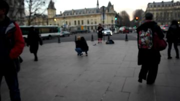
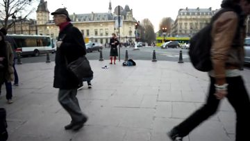
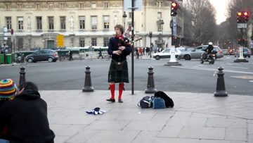
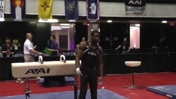
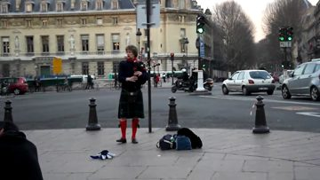
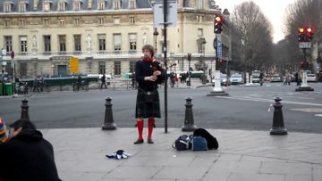
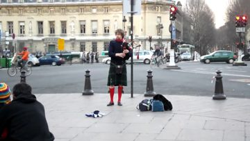

Flow-Trained One-Pass Drafting for Video Language Models







VFlash-FM speeds up video language models by proposing a whole block of 16 tokens in one drafter forward, which the unchanged target verifies in one pass. The drafter never processes the video: it reads the target's hidden states, and it is trained along a discrete flow from masks to the target's continuation instead of only at the all-mask start. On LLaVA-OneVision-7B this gives a 3.85× macro-average decoding speedup across five video benchmarks.
Same clip, same prompt, same H100, played at a quarter of real time. The strip at the bottom right shows each verification cycle: the anchor, the 15 drafted tokens, and the target's correction.
The drafter never processes the video. It reads the hidden states the frozen target has already computed for every context position, proposes a whole block of 15 tokens in one forward, and the unchanged target verifies the block in one forward. Whatever is accepted is exactly what the target would have generated on its own.
Training is what gives the drafter its early-block accuracy. The masked block is treated as the state of a discrete flow that starts from all masks and ends at the target's continuation, and the same network is also supervised at partially revealed blocks that its own reveal rounds produce, with revealed tokens that may be wrong, while the loss always points at the target's continuation. It learns to keep what it was right about, overwrite what it was wrong about, and predict the rest. Deployment stays a single forward from masks, so the training adds nothing to decode time.
LLaVA-OneVision-7B, five video benchmarks
Fastest listed variant of each method. Baselines are the published numbers of each study on its own hardware and protocol; ours are 50 clips × 3 seeds per benchmark on one H100, greedy, block 16, one drafter forward per block.
| Method | VDC | Video-MME | MVBench | MLVU | LVB | Macro avg. |
|---|---|---|---|---|---|---|
| SpecVLM (0.5B drafter) | 1.83 | 1.82 | 1.77 | 1.76 | 1.86 | 1.81 |
| ParallelVLM (0.5B drafter) | 2.12 | 2.06 | 2.15 | 2.14 | 2.10 | 2.11 |
| SPARROW (learned drafter) | 2.84 | 2.96 | 2.69 | not reported | 2.77 | 2.82 |
| VFlash-FM, Tree-60 | 3.644 | 4.176 | 3.606 | 4.087 | 3.734 | 3.850 |
VDC: VideoDetailCaption; LVB: LongVideoBench. With chain verification VFlash-FM reaches 3.773× macro on the same benchmarks. On Qwen2.5-VL-7B, a separately trained drafter with the same recipe reaches 2.442× macro with Tree-60.